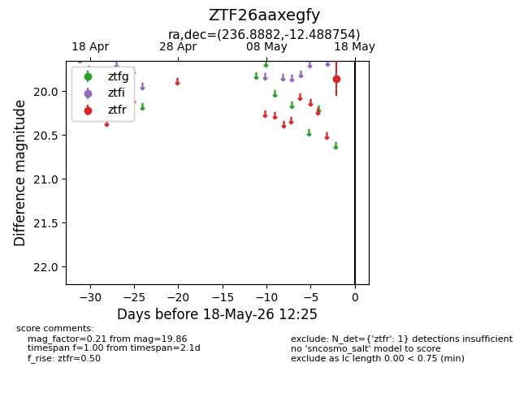
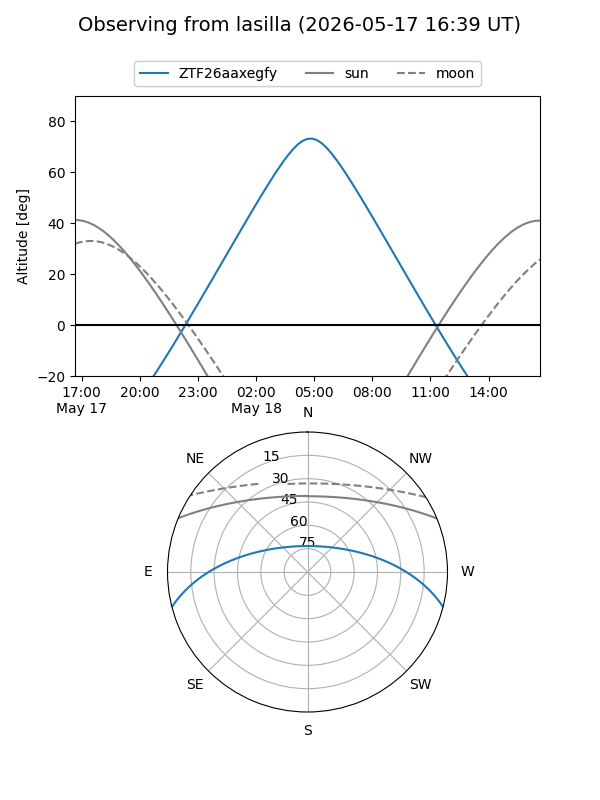
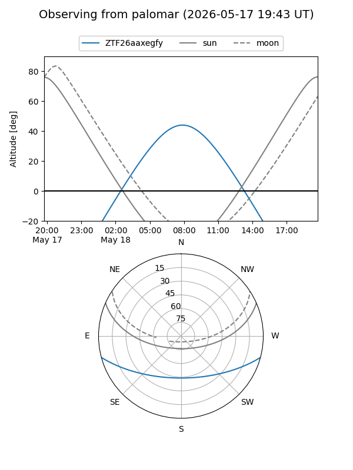

ZTF26aaxegfy
Target ZTF26aaxegfy at 2026-05-18 12:27
Aliases and brokers:
FINK: link
Lasair: link
ALeRCE: link
alt names
ZTF26aaxegfy (ztf,fink_ztf)
Coordinates:
equatorial (ra, dec) = 236.8882,-12.48875
equatorial (HMS+DMS) = 15:47:33.16,-12:29:19.51
galactic (l, b) = (355.8669,+31.74553)
Flags:
Photometry:
last ztfr=19.86
1 ztfr detections
Lightcurve

Visibility


Additional plots